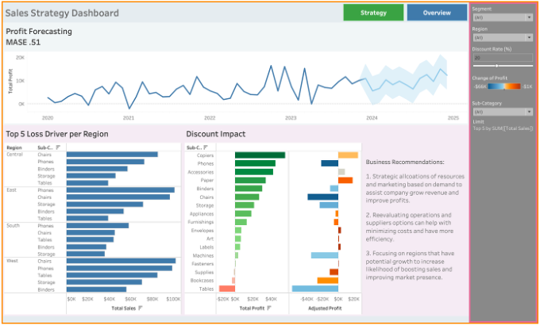
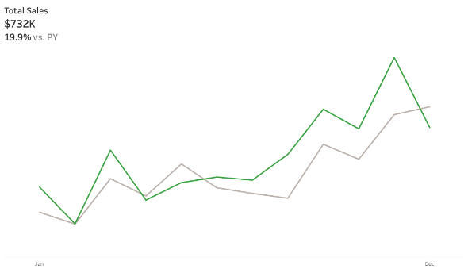
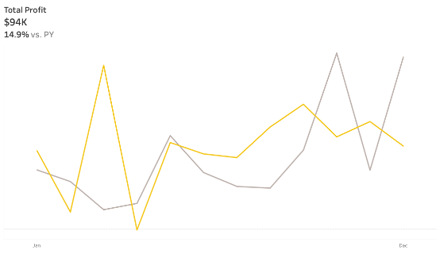
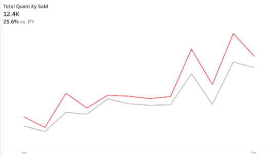
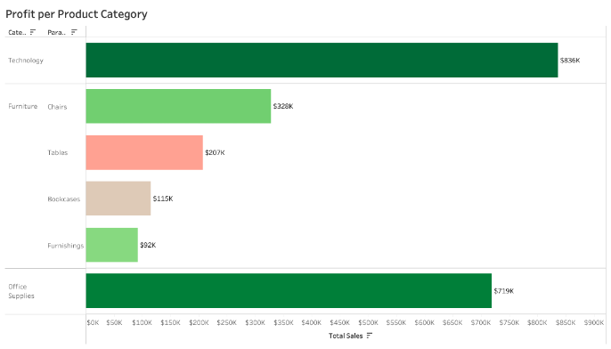
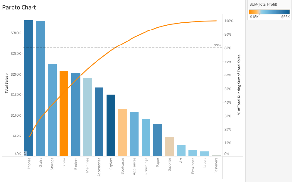
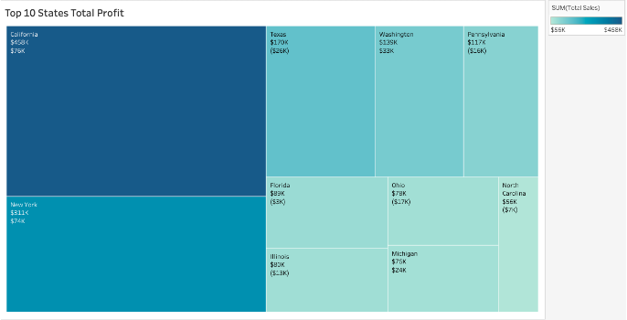
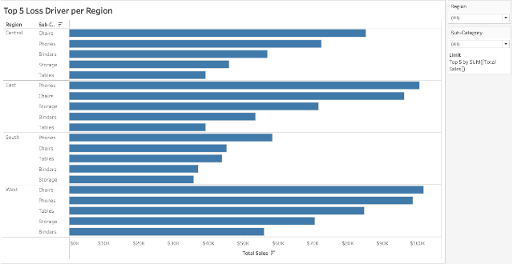
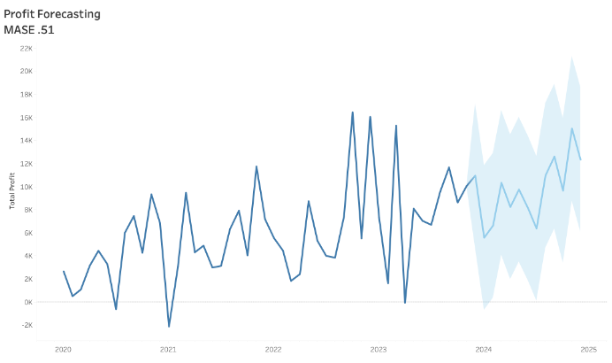
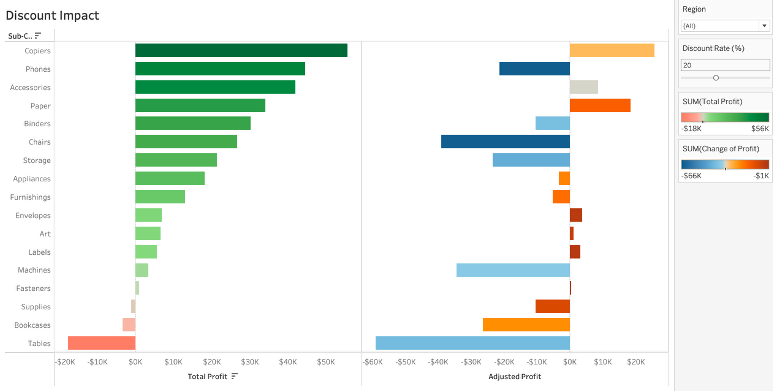

BUSINESS ANALYTICS · COURSE PROJECT · DECEMBER 2025
Business Analytics
Tableau Marketing Report
An analysis of store sales and profit trends, category performance, and potential management decisions, presented through interactive Tableau dashboards and a stakeholder-style report.


01 / OVERVIEW
Project overview
For CAI 3801-001 in Fall 2025, I used Tableau to analyze the Store Dataset, a transactional dataset provided for the project. I built visualizations and dashboards to examine sales, profit, product performance, regional patterns, historical trends, and possible management decisions.
02 / BUSINESS QUESTION
Business question / problem
The project focused on three marketing questions: Which products contribute the most to sales? What factors influence sales over time? How can the company boost customer engagement to increase overall sales?
03 / DATA & ANALYSIS
Data & analysis
The Store Dataset contains 9,994 rows and 27 columns, including Total Sales, Total Profit, Total Costs, Sub-Category, and Region. The report describes the data as structured and free of null values, formatting inconsistencies, and duplicate entries.
The analysis included descriptive and diagnostic views of monthly sales, profit, and quantity sold against the previous year; category and regional performance; profit loss drivers; a next-year profit forecast based on historical trends; and a discount what-if scenario. The report assumes prices and quantities are recorded correctly, and that competitor activity and economic shifts do not significantly distort trends.
04 / TOOLS
Tools used
05 / VISUALIZATIONS
Visualizations
I revised and refined more than five visualizations and organized them into two dashboard pages. Sales Overview presents sales, profit, and quantity KPIs; Strategic Overview brings together deeper analysis, including customer segmentation and discount what-if scenarios. Filters support exploration by region, segment, product category, and year.









06 / FINDINGS
Key insights
- Furniture had the lowest profit among categories in the drill-down; Tables were the largest source of losses within Furniture.
- The monthly KPI views compare sales, profit, and quantity sold with the previous year to reveal changes and seasonal patterns. The report recommends using those patterns for planning.
- The category Pareto chart ranks categories by sales contribution. The report uses the 80/20 principle to identify categories to prioritize, but does not state category-level percentages.
- The treemap presents the top 10 most profitable states, while the loss-driver chart compares the largest loss drivers across regions.
- The predictive views include a profit forecast for the next year based on historical trends and a discount scenario showing how discount changes affect profit.
07 / NEXT STEPS
Recommendations
The report's analysis points to several practical actions:
- Review the Furniture strategy, beginning with Tables, and assess whether approaches used in more profitable categories can be adapted.
- Use monthly sales, profit, quantity, and forecast patterns to plan inventory and allocate resources around changing demand while monitoring costs and profitability.
- Prioritize high-contributing sales categories and profitable states for marketing and operations, while investigating the largest region-specific loss drivers.
08 / COMMUNICATION
Deliverables
- 01
An 8-page analytical report.
- 02
A 5-minute Microsoft Teams presentation summarizing insights and recommendations to a simulated stakeholder audience.
09 / LOOKING BACK
Reflection / what I learned
This project gave me hands-on practice turning raw data into business strategies. I developed my skills in interactive visualizations and calculations, interpreting trends, and communicating insights. Designing dashboards that presented the information clearly was a challenge; working through it strengthened my attention to detail and confidence in making data-informed recommendations.